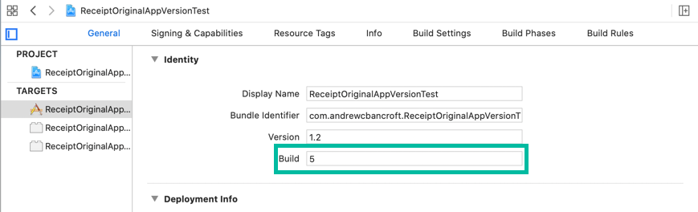

I am the author of Implementing In-app Purchases on iOS on Pluralsight.
Deepen your understanding by watching the course!
iOS Receipt Validation: Understanding and Troubleshooting the Original App Version Field
If you're checking the 'original_application_version' field to see if someone originally purchased a specific version of your app, you'll want to explore the nuances of your app's receipt to ensure that your app works correctly in production.
Setting the stage with a use case for checking the original_application_version
The task appears to be simple. Suppose that…
- You have an existing app on the app store that’s currently at version 1.2
- You want to shift to the “freemium” model by implementing in-app purchases starting with version 1.3
- You want to be fair to previous-purchasers of my app (anyone who downloaded the app between version 1.0 and 1.2)
Therefore…
- You want to check to see if someone originally purchased version 1.2 or below of your app so that you can “grandfather them in”
To figure this out, you’ll need to implement local receipt validation or set up an environment to do remote receipt validation.
When you’re done, you’ll get access to a field that contains an “original application version”.
The temptation is to inspect this field, parse it out into major and minor version numbers, and write some conditional logic to unlock (or not) certain features of your app.
But…
What does original_application_version really mean?
“Original application version” may not mean what you think it means.
What does it mean?
“Original application version” refers to the value of the Build field of your Xcode project at the time a user downloaded it from the App Store: 
Just the Build field?
Yes. Just the Build field.
And that’s weird, because when you and I think of “application versions”, we naturally think in terms of the semantic version number of our apps.
Our brains think “1.2.5” as “{majorVersion}.{minorVersion}.{patchNumber}”.
Many folks use that natural intuition and splice together the Version and Build fields from the Xcode project configuration screen to make what could be considered to be the full semantic version of an app.
If you follow this logic through and conclude that the Version + Build fields are what appears in the original_application_version field of the Receipt, you’ll be in for a rude awakening like I was.
Your grandfathering unlocking logic could be buggy if you’re thinking “Build == patch number” and Apple is thinking “Build == application version at time of download from App Store”.
Gotchas when inspecting the original_application_version field
Sandbox vs App Store receipts
To make things even trickier, the value that’s present in this parsed receipt field is unlikely to be the same between the receipt you get from the sandbox environment and the receipt you get from the production environment (the App Store).
According to Apple’s Receipt Validation Programming Guide, the “original application version” field always contains “1.0” in the sandbox environment.
The only way that your sandbox receipt and your App Store receipt “original application version” fields will match is if you put “1.0” in the Build field of your Xcode project and deploy to the App Store.
Version / Build confusion
Furthermore, the fact that the sandbox environment has “1.0” as its value makes it look like it contains a {majorVersion}.{minorVersion} combo.
It’s deceiving.
It might seem like “original application version” corresponds to the Version field instead of the Build field of your Xcode project configuration.
But it doesn’t.
Build number cautions
Coming full circle now.
In the past, I often used the Build field of my Xcode project to mean the equivalent of a patch number for a given major-minor version of my app.
Using “Build” to mean “patch number” is a less-than-ideal use of the Build field if you plan to do app version checking for “grandfathering in” like I did.
Why?
1) Apple uses it to mean “app version at time of download”
By now you might be realizing that the using your Xcode project’s Build field to mean “patch number” when Apple uses it to mean “app version at time of download” presents some discrepancies in meaning, yes?
When it comes to receipt checking, it only makes sense to come to terms with what Build means to Apple.
You’ll set yourself up for success if you adjust your ussage to match theirs.
2) Build numbers aren’t unique
Build numbers can be reused across releases of your app.
Suppose that you decide you want to use your Xcode project’s Version and Build fields to construct a “semantic version” for your app.
- You use “1.0” as your Xcode project’s Version.
- You implement five rounds of bug fixes and land on “5” as your Xcode project’s Build.
In this way, you encode “1.0.5” as the semantic version of your app.
Now suppose that later on…
- You use “1.1” as your Xcode project’s Version.
- You implement five more rounds bug fixes for version 1.1 and land on “5” as your Xcode project’s Build.
In this way, you encode “1.1.5” as the “semantic version” of your app.
Guess what: The receipts for both app releases will contain “5” in the “original application version” field.
Why?
Because “original application version” only contains the value from the Build field, and that’s the Build value that landed in the App Store for both releases.
3) Using sequential “patch number” integers for the Build doesn’t contain enough encoded information to perform “grandfathering in” logic
To set yourself up for “grandfathering in” logic, you want to encode enough meaning in the Build field to write the most appropriate conditional logic for locking/unlocking your app’s purchase-only features.
Choosing a strategic Build value
What could you do? Here are a few ideas:
- Regardless of what’s in the Version field of your Xcode project configuration, you could encode the full semantic version of your app in the Build field.
Doing this will let you parse the “original application version” value like you’d expect and implement the right if-else statements in your code.
- You could encode more meaningful information in the Build field, such as a “date” represented as an integer
Suppose that it’s January 1, 2020 and you’re preparing builds for an App Store submission.
You could put “20200101.1” in the Build field to represent the first build of today’s submission.
Things may not go perfect during testing with the first upload.
If you need to submit a new build, you could change the Build field’s value to “20200101.2” to represent the second build of today’s submission.
In both cases, you’ve encoded a “date” as an integer inside of the Build field.
Now suppose that you want to grandfather in everyone who bought your app prior to today (January 1, 2020 from the scenario above).
Here’s the pseudo code narrative of the branching logic you’d write:
“If the user’s receipt contains a value less than 20200101 in his/her original application version field, consider them an original purchaser, grandfather them in, and unlock the feature. Otherwise, make them buy the in-app purchase before unlocking.”
Bottom line: If you can come to terms with the nuances of your app receipt’s “original application version” field, you’ll ensure that your app works correctly in production.